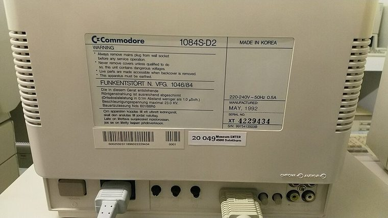

[ INDIVIDUAL COMPONENT // DISPLAYS ]
Commodore 1084S-D2 PAL Monitor
14-inch-class PAL color monitor; D2 variant, late 1980s. analog

IDENTIFICATION: Verify the complete model/revision on the rear label. Specifications are tied to the cited manual/specification; variant-dependent values are qualified rather than generalized.
Specifications
| Catalog subcategory | Crt Displays |
|---|---|
| Exact product/family | Commodore 1084S-D2 PAL Monitor |
| Era | 14-inch-class PAL color monitor; D2 variant, late 1980s. |
| Tube / image | 14-inch class color CRT; PAL 15.625 kHz / 50 Hz raster; no fixed pixel matrix. |
| Signal / inputs | D2 uses 8-pin RGB DIN and composite-video inputs as documented; stereo audio connections on the D2 set. Check rear-panel labels. |
| Power / region | The cited D2 PAL manual describes its regional mains variant; follow rear label, not NTSC model assumptions. |
| Mechanical | Desktop CRT with integral stand; suffix and region alter connections, controls and cabinet. |
Revision, signal & host compatibility
Amiga 15-kHz RGB output is a compatible signal class; ordinary VGA output is not directly compatible. The 1084S label covers D1/D2, PAL/NTSC and OEM variants; inputs, switching, audio, wiring and mains may differ. Verify exact suffix, DIN pinout and label.
Match source signal type, sync/timing, connector pinout, bandwidth and power path to this exact display. Physical connector fit alone does not establish electrical or timing compatibility.
Preservation & repair notes
Photograph suffix and rear label. Check RGB, composite lock, audio and controls separately. Use D2 service information, not a visually similar 1084 schematic. Do not open CRT without qualified high-voltage service practice.
Record model suffix, serial/date label, accessories, image condition, configuration, source document and repair history. CRT high-voltage, LCD backlight and OLED panel risks require appropriate service training and the correct manual.
Manufacturer manuals & references
- Commodore 1084S Monitor User’s GuideConnection and setup reference for 1084S monitors.
- Commodore 1084S-D2 PAL User/Service ManualD2-specific scan for exact inputs, mains and service details.